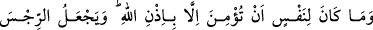
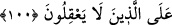

Hz. Musa (a.s.) Tur’a yöneldiğinde yolda evliyâullahtan bir veliye rastladı ve selam
verdi. Fakat veli, Musa (a.s.)’ın selamını almadı. Hz. Musa (a.s.) Allah ile münâcât
mahalline gelince, şöyle dedi:
“–Allah’ım kullarından birine selam verdim, ama selamımı almadı.”
Allah Teâlâ Hz. Musa’ya şöyle cevap verdi:
“–Ey Musa, bu kul altı gündür benimle bile konuşmuyor.”
Musa:
“–Niçin ya Rab?” deyince, Allah şöyle buyurdu:
“Çünkü Ben’den bütün günahkarları bağışlamamı, bütün isyankârları cehennem
azabından âzâd etmemi istedi, ama bunu kabul etmedim. O da bu yüzden altı gündür
benimle konuşmuyor.” el-Vâkıâtü’l-Mahmûdiyye’de böyle geçmektedir.
Hâsılı, Allah Teâlâ Peygamber Efendimiz’in bu derece arzulu olduğunu görünce, bu
âyeti indirmiş ve kavminin inanmasını kendi isteğine bağlayarak şöyle buyurmuştur:
“O halde” Rabb’in bunu dilemediği halde “sen mi insanları” Allah’ın dilemediği bu
îmâna “inanmaları için zorlayacaksın.”
el-Kevâşî’de de belirtildiği üzere: “Bu sana yakışmaz. O zaman buradaki kötü görme
hadisesi, mezkur zorlamanın Allah’ın dilememesine rağmen gerçekleştirilmesine tevcih
edilmiş olur. Nitekim el-İrşâd’da böyle geçmektedir.
Asıl fiil olan zorlamanın mümkün ve yapılabilir olduğu anlatılmakta, fakat esas
meselenin zorlayanın kimliği olduğu gösterilmektedir. Zorlayan, O’ndan başkası
değildir. Bu konuda kimse O’na ortak olamaz. Çünkü Mekkeliler’i îmân etmeye
zorlayacak saikleri kalplerine koymaya ancak O’nun gücü yeter. Böyle bir şey
insanoğlunun gücü dahilinde değildir.
Seyyid Şerif, Şerhu’l-Miftâh’da şöyle diyor: “O halde sen mi insanları...
zorlayacaksın!” âyetinden maksat, bu zorlama fiilinin Hz. Peygamber’den sâdır
oluşunun kötü görülmesidir, yoksa zorlamanın gerçekleşmesinin normal olduğu, fakat
bunu Hz. Peygamber’in yapmasının kötü olduğu kastedilmektedir. Failin (sen) öne
alınması reddetme hükmünü pekiştirmek gayesiyledir. Müfti Sa‘dî Hâşiyesi’nde böyle
geçmektedir.
Kâşifî der ki: “Bu âyet, savaşmayı emreden âyetle nesh edilmiştir.” et-Tibyan’da ise
şöyle denilmektedir: “Doğru olan görüş, bu âyetin nesh edilmediğidir. Çünkü îmân,
kalbin ameli olduğu için îmâna zorlanamaz.”